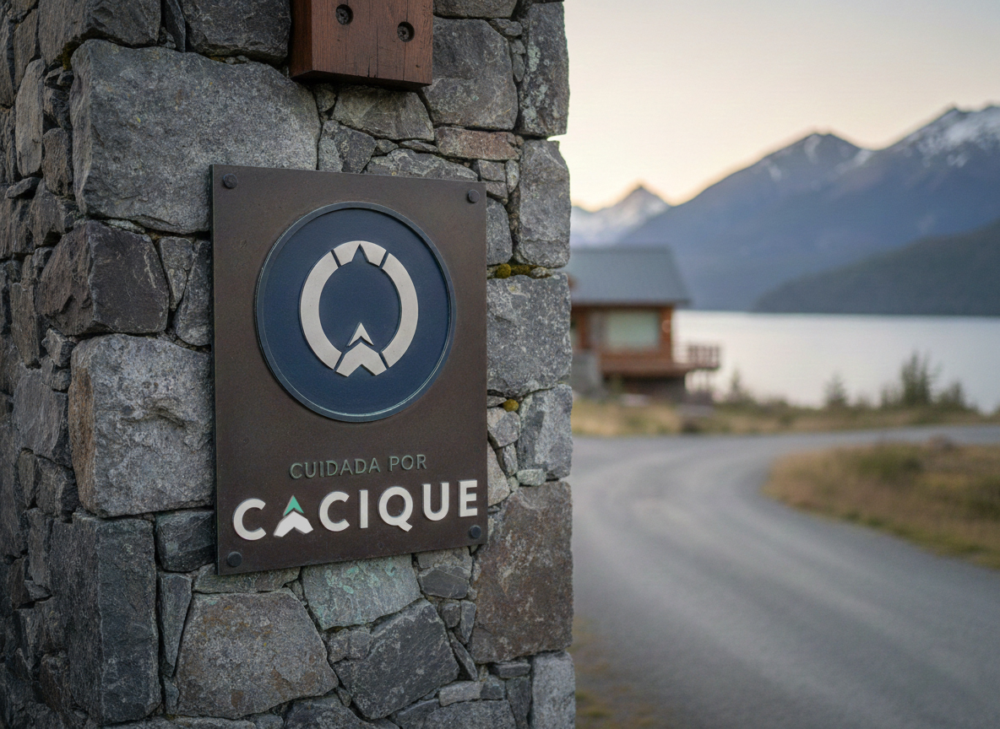
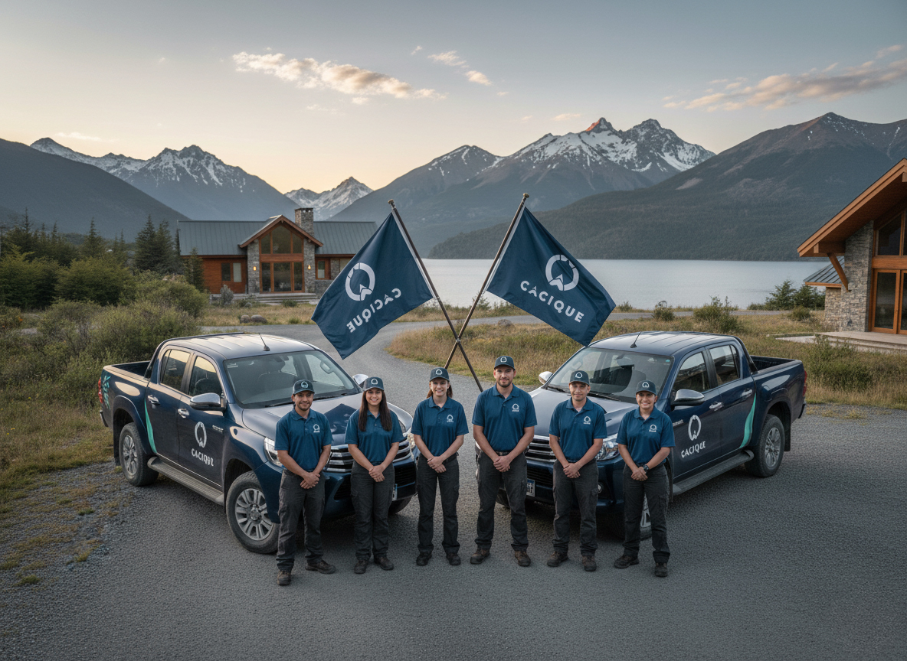

Cacique
A brand that had to say Patagonia and precision at the same time — without falling into the ease of a feather.

Villa La Angostura · Neuquén
With Lucía Domínguez · Al Sur Studio
Closed project
Isologo, 3 variants, manual and files
Cacique brings together a team of specialists covering everything a home needs: plumbing, roofs, electricity, the boiler before winter. One single place to ask, instead of looking for each trade separately.
The service rests on something simple: knowing exactly where the problem is and solving it without anyone having to explain anything. That called for a trade identity, not a real-estate one or a generic platform.
They launched in Villa La Angostura, with the intention of opening in other places later. The commission was limited and stayed that way: the identity kickoff. I worked on it with Lucía Domínguez, from Al Sur Studio.

Pantone 447 C
C20 M0 Y0 K90
Pantone 309 C
C100 M60 Y60 K50
Pantone 3375 C
C53 M0 Y0 K36
A tool-graphite gray as the base, the deep blue of the lake for solid areas and an aqua green that appears in small doses: the diagonal cut on the pickup truck, the vertex of the arrow, a detail on the plaque.
Medium
Headlines. Sans-serif, highly legible, with the wide capitals that give it presence over photos.
Paragraphs and text. Holds the visual air without competing with the headline.
Vertical, horizontal and standalone logotype for specific cases. Each with its own clear space.
250, 150 and 20 px in digital; 90, 50 and 5 mm in print. Different size, different variant.
Sixteen illustrated cases, including the most likely one here: the brand on a photographic background without contrast.

A well-closed kickoff is enough for the brand to walk on its own.
Supporting production isn't always necessary. With the system defined, the manual clear and the files delivered, the client applies it better than you'd expect. Here, moreover, the brand had to be ready for what the business wasn't yet: more trades, more services and other locations beyond Villa La Angostura.
Developed together with Lucía Domínguez — Al Sur Studio.
Do you need a focused identity, well resolved, with a manual the team can use on its own?
That's Cacique: isologo, system and clear rules. Nothing more, nothing less.